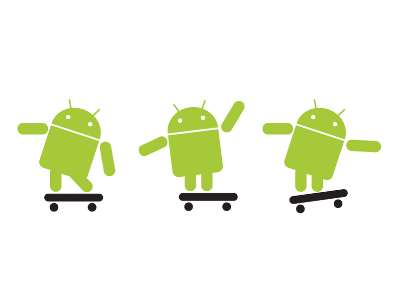

10 языков для Android-разработчика
Английский даже не учитывается.
27 марта 20173 минуты190959
Согласно данным портала Netmarketshare операционная система Android установлена на 66.71% всех мобильных устройств в мире. Так что нет ничего удивительного, что многие начинающие айтишники желают реализовывать свои амбиции именно на этой платформе.
Совсем недавно на GeekBrains мы затрагивали тему выбора языка для мобильных платформ, но в этот раз остановимся поподробнее на Android. Вот 10 языков, которые позволят вам создать мобильное приложение любого типа и сложности:

Java
Не будет большим преувеличением назвать Java официальным языком Android. Во всяком случае, почти вся образовательная документация, все интернет-курсы основаны на этом. А еще это самый популярный язык по оценке TIOBE, второй по количеству исходников на GitHub, да и вообще большой красивый язык. Именно поэтому изучение Java должно быть первоочередной задачей для любого Android-разработчика. Пусть это будет непросто (все-таки языку 22года, а легкость никогда не была его коньком), пусть теоретически можно обойтись более современными языками, помните — невозможно добиться существенных успехов на Android, абсолютно не понимая Java, не говоря уже о конкретных исходниках.
C#
При всем нескончаемом скепсисе, направленным в сторону продуктов Microsoft, стоит признать, что C# этого не заслуживает. Это прекрасный язык, вобравший в себя всё лучшее от Java, при этом учтя и исправив многие недостатки.
Что касается разработки приложений под Android, то здесь к вашим услугам одни из самых функциональных сред Visual и Xamarin Studio. А еще знание C# станет для вас приятным бонусом, когда доберетесь до использования Unity 3D. С таким набором возможности будут безграничны.
Python
Тот факт, что Android не поддерживает использование Python для создания нативных приложений, еще не означает, что это невозможно. Любители этого змеиного языка разработали множество инструментов, позволяющих скомпилировать код на Python в требуемое состояние.
Самым популярным фреймворком является Kivy, который без труда поможет вам создать приложение для Play Market на чистом Python. А если нет, то помогут добрые разработчики в чате. Если вы еще не овладели им, рекомендуем пройти бесплатный онлайн-курс по питону.
Kotlin
В тексте про недооцениваемые языки программирования я уже пытался объяснить, почему Kotlin сам по себе отличный язык, а в связке с Java он ещё лучше. Действительно, официально выпущенный лишь год назад, Kotlin очень быстро завоевывает сердца разработчиков по всему миру практически полным отсутствием недостатков.
С его помощью (точнее с помощью родной среды IntelliJ IDEA) вы не будете чувствовать никаких проблем в разработке нативных приложений для Android. При этом спрос на специалистов Kotlin пока низок, а значит, получив опыт работы с ним, вы рискуете в будущем получить конкурентное преимущество.
Языки веба
Стандартный языковой набор работника веба: HTML, CSS и JavaScript. Не зная эти 3 языка, вы сведете себя к разработке приложений достаточно узкой направленности. Даже если вы непосредственно веба в будущей работе касаться не хотите, то гибридных приложений избежать получиться вряд ли.
Работать с HTML, CSS и JavaScript можно используя среды PhoneGap Build или, в более специализированном случае, Adobe Cordova. Больших знаний они от вас не потребуют, а результат обеспечат. Или вот из последнего, React Native от Facebook — это уже следующий уровень удобства взаимодействия, но опыта и документации скопилось мало. В общем, выбирайте, благо есть из чего.
Lua
Lua — язык, который старше Java, куда менее популярный, но всё равно востребованный. У него есть ряд преимуществ, вроде динамической типизации, относительно простого синтаксиса, но до наших дней он дожил благодаря задействованности в играх. Именно удобство создания программной прослойки между движком и оболочкой открыло перед Lua двери в мир карманных гаджетов.
Corona SDK — среда для разработки мобильных кроссплатформенных приложений, преимущественно игр, где главным инструментом является Lua. С 2015 года она распространяется бесплатно, рассчитана на начинающих разработчиков, плюс ко всему вы можете найти много полезной информации, как в англоязычном, так и русскоязычном сегменте интернета.
C/C++
На самом деле Google предоставляет разработчиков две среды разработки: SDK, предназначенная для работы с Java, и NDK, где нативными языками являются C/C++. Да, конечно вы не напишете целое приложение с использованием лишь этих языков, но с их помощью вы можете создать библиотеку, которую впоследствии при помощи Java подключите к основному телу программы.
Несмотря на то, что подавляющему большинству разработчиков нет никакого дела до NDK, тем не менее задействовав этот инструмент вы получите лучшие результаты по производительности и использованию внутренних ресурсов. А это именно то, что на Android отличает хорошую идею приложения от хорошей реализации.
А на каких языках пишете вы?